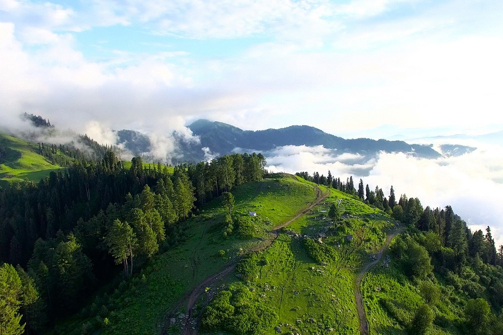

Balakot City: Places To Visit In Balakot

Balakot is a town in the Mansehra District in the KPK province of Pakistan. The town was destroyed during the 2005 Kashmir earthquake but was later rebuilt and now it’s a beautiful place to visit. The town was destroyed in a destructive earthquake. The fault almost passes through the main bazaar of the city. It follows the hilly area to the north up to Allai and leads to the Bagh in Azad Jammu & Kashmir from the villages of Balakot like Kanshian and Jabri Kaleesh. There are so many places to visit in Balakot. In this blog we may talk about them too.
Some history of Balakot
The Garlat wooden bridge was created in 1895 and this bridge has stood the test of time for over 100 years. It was the first bridge to be used for transportation and that was connected to Balakot, Kaghan Valley and the other parts of Pakistan. After the Garlat wooden bridge was destroyed in 1992, it was replaced with another bridge to serve heavy.
Government Support
In terms of tourism, Pakistan has seen tremendous growth over the past few years. Pakistan was once a dangerous terrorist state, but now it is safe to visit.
Why Balakot is a great place to visit
Because there are so many places to visit in Balakot. Balakot is a town that is famous for its beautiful scenic landscapes, backwaters, and historical sites. The town of Balakot is situated on the banks of the Kunhar River and is known for its natural water-bodies canals. Kunhar River flows throughout the city, making it an awesome place for picnicking. The river is connected to a lot of streams and lakes, but the most famous one is Lulusar Lake. This amazing spot with so many rivers flowing to the shore is perfect for picnicking. There is no airport in the city. You need to take a bus to get to Balakot. The KPK provincial government has developed the bus service from Abbottabad to Balakot but that may be not operational nowadays. But you can go with private bus operators like Faisal Mover. There are very few hotels in Balakot which are not much expensive because if you travel from Islamabad to Naran then this would be a short stay for you like half an hour. Also, some people rent a room from relatives and friends, if you have relatives there it would be great and you can take a rest for a night and enjoy the night view of Balakot bridge.
The best time to visit
Balakot is one of the most beautiful towns in Pakistan to visit. As summer is very hot in Pakistan, the best time to visit Balakot is during wintertime. So the most preferable time to visit this place is summer, as in summer you can find lush greenery in the surrounding areas because in winters sometimes there would be huge snowfall here and some tourists might be stuck in it.
The best time to visit is between October and December as rainfall is adequate and the weather would be perfect for exploring Balakot’s beauty. But no doubt it’s one of the most beautiful tourist destinations in Pakistan. Most of the young tourists who visit the Balakot valley during winter stay here for long. There are a lot of palaces, mansions, and is famous for its handicrafts. The location is surrounded by mountains so one needs to walk through rough mountainous tracks to see the rich diversity of nature.
Balakot Weather and climate
Balakot is a place you won’t want to miss out on! The lower area is temperate while the upper area is cold enough to turn everything to freezing in the winter. Kaghan valley is a pleasant summer destination with its upper part providing no monsoon, while the lower part gets plenty. This city has expanded and is now the center of northern parts. Balakot lies in the high altitude plateau known as the Himalayan foothills of Azad Kashmir, where it is affected by high altitude winds and cold weather.However, in summer the temperature can reach up to 36°C and in winter it can drop down to freezing temperatures. The average annual rainfall of Balakot is 1,000mm. The city experiences heavy rainfall in July, so it is not the best time to visit. November is the driest month and it will be chilly, yet pleasant.

Conclusion
You can find many places to visit in Balakot and also in nearby areas too. Like the natural forests and hills of the nearby towns of Mansehra and Abbottabad. You never know what you might find around the next corner! Ypu can also check out some more blogs about tourism in Pakistan, here is an article on ATTABAD LAKE.